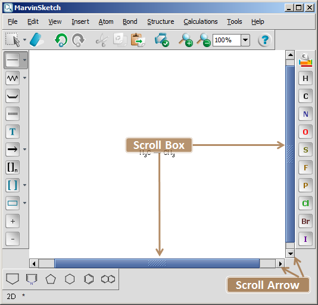

The canvas is the main area where chemical structures, queries and reactions are drawn.
To zoom in or out on the canvas, you can choose the Zoom In, Zoom Out or Zoom Tool of General Toolbar. The View Menu has also options to change the magnification of the canvas. If you have a mouse with a wheel, you can also use Ctrl+Mouse Wheel to zoom in or out on the canvas. When using Ctrl+Mouse Wheel to zoom, the actual position of the cursor will define the center of zooming.
Drawing on the canvas activates the horizontal and vertical scroll bars. To move the canvas click the Scroll Arrow of the scroll bar or drag the Scroll Box to scroll the canvas in the preferred direction. You can also use the appropriate Arrow Key of your keyboard to move the canvas. Note: Moving the Canvas with Arrow Keys works only when no selection is made or everything is selected on the Canvas. When an item is selected on the canvas, the Arrow Keys will move the marked object. Ctrl+Arrow key can be used to move the canvas in this case. Shift+Arrow keys will move the selected items in greater units. The undo operation recalls the former direction of these movements. If you have a mouse with a wheel, use the Mouse Wheel to scroll the canvas up or down and use Shift+Mouse Wheel to scroll the canvas left or right.
